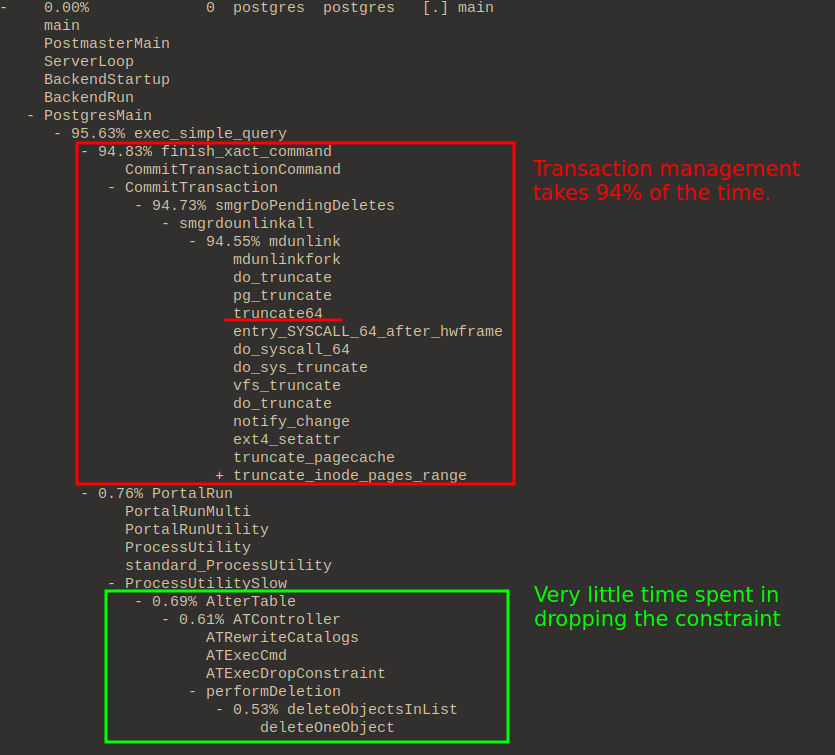

Created at: 2024-10-24
This post is about profiling Postgres on Linux. The profiling tools used here are not OS agnostic. Alternatives for BSD and MacOs may exist. I have written a separated note for Mac, so check that out if you are interested.
The main goal is to check what happens when a Postgres query is triggered.
Follow my note called "Building From Source".
This is my summarised version of two much completer pages: - Postgres wiki - blog post.
perf record runs a command and records its profile into perf.data.
Flags:
-a: System-g : Records both kernel space and user space call-s : Records per-p : Records events on existing process ID.--call-graph : using the dwarf option instead of fp (frame pointer) means we don't have to worry about --fomit-frame-pointer.
# Allow use of almost all events by all users.
# This will be reset if you reboot your computer.
sudo sysctl -w kernel.perf_event_paranoid=-1
# Run psql to grab the process id.
# Use this query:
# select pg_backend_pid();
./psql.sh
# You now must run this in another shell!
PID=220177
perf record -a -g -s --call-graph dwarf -p ${PID}
# Then print the report. This will look at perf.data in the current directory.
# You can use + to expand the stack trace.
perf report -n
What happens when we are dropping a unique constraint in Postgres?
-- Table with a single integer field.
DROP TABLE IF EXISTS example_table;
CREATE TABLE example_table (
id SERIAL PRIMARY KEY,
int_field INTEGER
);
-- Add the constraint with a name of our choice.
ALTER TABLE example_table
ADD CONSTRAINT unique_int_field UNIQUE (int_field);
-- Insert 20,000,000 rows.
INSERT INTO example_table (int_field)
SELECT generate_series(1, 20000000);
VACUUM FULL;
VACUUM ANALYZE;
-- Insert an extra 900,000 rows that will be made into dead tuples.
INSERT INTO example_table (int_field)
SELECT generate_series(20000001, 20900000);
-- Make the dead tuples
UPDATE example_table
SET int_field = int_field + 10000000
WHERE int_field > 20000000;
-- Check number of dead rows, it should be about 900,000
SELECT n_dead_tup FROM pg_stat_user_tables WHERE relname = 'example_table';
-- Print the process id.
select pg_backend_pid();
Note, if you already have something running on that psql shell, another way of grabbing that pid is to open a new shell and run:
select pid, query from pg_stat_activity
where application_name = 'psql' and pid != pg_backend_pid();
Now open a new terminal, and start the profiler:
PID=110540
perf record -a -s --call-graph dwarf -p ${PID}
Back on the psql shell, drop the constraint and then close the psql process to stop profiling:
ALTER TABLE example_table
DROP CONSTRAINT unique_int_field;
Open the report for quick inspection:
perf report -n

Another way of seeing the profile is via flamegraph.
git clone --depth 1 https://github.com/brendangregg/FlameGraph
mv FlameGraph build
FLAME="build/FlameGraph"
mkdir ${FLAME}/out
perf script --header > ${FLAME}/out.stacks
${FLAME}/stackcollapse-perf.pl < ${FLAME}/out.stacks > ${FLAME}/collapsed.txt
${FLAME}/flamegraph.pl --hash ${FLAME}/collapsed.txt > ${FLAME}/out.svg
$BROWSER ${FLAME}/out.svg
Dropping the constraint itself is very quick. It only involves updating the catalogue. However, the place that takes a lot of time is in committing the transaction.
The mdunlink function is a function that helps manage relations that reside on magnetic disk. In this case, the constraint is backed by an index, and this index needs to be deleted. Ultimately this function will call truncate(1) with zero (removing it).